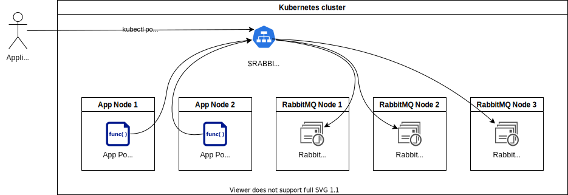

RabbitMQ®¶

This page will help you succeed in connecting your application to a RabbitMQ-based message queue which meets your security and compliance requirements.
Provision a New RabbitMQ Cluster¶
Ask your service-specific administrator to install a RabbitMQ cluster inside your Compliant Kubernetes environment. The service-specific administrator will ensure the RabbitMQ cluster complies with your security requirements, including:
- Business continuity: We recommend a highly available setup with three instances.
- Disaster recovery: Note that, because messages are often short-lived and possibly transient, backing them up from under a running node is highly discouraged and can lead to an inconsistent snapshot of the data. Generally, disaster recovery for message queue only makes sense for the dead letter exchange.
- Capacity management: Your service-specific administrator will ensure RabbitMQ runs on dedicated (i.e., tainted) Kubernetes Nodes, as required to get the best performance.
- Incident management: Your administrator will set up the necessary monitors, probes, dashboards and alerts, to discover issues and resolve them, before they become a problem.
- Access control: Your service-specific administrator will hand you the RabbitMQ administrator username and password. This will allow you to declare exchanges, queues, bindings, users, virtual hosts and user permissions, as required.
Compliant Kubernetes recommends the RabbitMQ Cluster Operator for Kubernetes.
Accessing a RabbitMQ Cluster¶
Before continuing, make sure you have access to the Kubernetes API, as describe here.
Make sure to install the RabbitMQ client on your workstation. On Ubuntu, this can be achieved as follows:
sudo apt install rabbitmq-server
Accessing the Management UI¶
RabbitMQ provides the management plugin which allows control over everything within it, including messaging topology and access control.
Your administrator will set up a Secret inside Compliant Kubernetes containing the credentials of the default admin user, which is all you need to access your RabbitMQ cluster. The Secret has the following shape:
apiVersion: v1
kind: Secret
metadata:
name: ${RABBITMQ_CLUSTER}-default-user
namespace: ${RABBITMQ_NAMESPACE}
stringData:
username: ${RABBITMQ_ADMIN_USERNAME}
password: ${RABBITMQ_ADMIN_PASSWORD}
Danger
The Secret is very precious! Prefer not to persist any information extracted from it, as shown below.
To access the management UI, proceed as follows:
-
Retrieve the admin default username and password
export RABBITMQ_CLUSTER= # Get this from your administrator export RABBITMQ_NAMESPACE= # Get this from your administrator echo -n "RabbitMQ admin username: " kubectl -n rabbitmq-system get secret rabbitmq-cluster-default-user -o jsonpath="{.data.username}" | base64 --decode && echo echo -n "RabbitMQ admin password: " kubectl -n rabbitmq-system get secret rabbitmq-cluster-default-user -o jsonpath="{.data.password}" | base64 --decode && echoDanger
Do not configure your application with the RabbitMQ default admin username and password. Since the application will get too much permission, this will likely violate your access control policy.
-
Start the port-forwarding:
kubectl port-forward -n ${RABBITMQ_NAMESPACE} svc/${RABBITMQ_CLUSTER} 15672 -
Open the admin dashboard (at http://localhost:15672) and log in using the credentials retrieved in step 1.
-
Create an application username, password and vhost, and store these in variables as named below:
APP_USER= APP_PASS= APP_VHOST=
Create an Application Secret¶
First, check that you are on the right Compliant Kubernetes cluster, in the right application namespace:
kubectl get nodes
kubectl config view --minify --output 'jsonpath={..namespace}'; echo
Now, create a Kubernetes Secret in your application namespace to store the AMPQ URL:
cat <<EOF | kubectl apply -f -
apiVersion: v1
kind: Secret
metadata:
name: app-amqp-secret
type: Opaque
stringData:
AMQP_URL: amqp://${APP_USER}:${APP_PASS}@${RABBITMQ_CLUSTER}.${RABBITMQ_NAMESPACE}/${APP_VHOST}
EOF
Expose AMQP URL to Your Application¶
To expose the AMQP URL to your application, follow one of the following upstream documentation:
- Create a Pod that has access to the secret data through a Volume
- Define container environment variables using Secret data
Using a RabbitMQ Cluster¶
Best practices for using RabbitMQ in Compliant Kubernetes.
Note
RabbitMQ is built as a plugin based system, by default only a limited set of plugins are enabled, contact your service-specific administrator about enabling the ones you require.
Cluster Division¶
RabbitMQ is a multi tenant system and has the concept of virtual host or vhost which provides logical separation of resources within it. Each vhost acts as their own RabbitMQ cluster and have their own connection, channels, exchanges, queues, and bindings.
Messages cannot flow directly between exchanges and queues in different vhosts, instead if that is required there must be a client that consumes messages in one vhost and then publishes messages in another vhost. This can also be realised with two plugins:
-
Federation plugin - Provides federated exchanges and queue which connect to an upstream cluster or vhost, allowing consumers to access message from the upstream source.
-
Shovel plugin - Provides a client which connect both to an upstream and downstream cluster or vhost, consuming and publishing messages between them.
Connection and Channel Management¶
In RabbitMQ connections and channels are intended to and optimised to be long-lived. Therefore one should avoid connection and channel churn by using and reusing them for as long as possible.
Each connection and channel consumes resources and should therefore be kept at a minimal number as required by the application. It is important to close unused connections and channels to free their resources.
Consumers and publishers should use separate connections and channels to allow RabbitMQ to better manage clients when under high pressure, allowing consumers to catch up by restricting publishers.
Recovering from connection failures should use automatic or recommended methods when provided by the client library, custom recovery methods need to be carefully made to not put too much pressure on RabbitMQ.
Reliable Messaging¶
The messaging protocol AMQP provide two mechanisms for client to manage reliable messaging:
-
Consumer Acknowledgements - Ensure that the client has properly received a message. RabbitMQ will redeliver message left unacknowledged.
-
Publisher Confirms - Ensures that the server has properly received a message. RabbitMQ may delay confirms when under to high pressure to be able to handle the load.
Additionally RabbitMQ has different queue types and modes that affect the reliability of messaging as will be explained in the next section.
Queue Selection¶
RabbitMQ supports three different types of queues which all have different pro's and con's:
-
Classic Queues - Best for high performance with transient messages.
This is the standard choice for transient queues and messages since they consume little resources and offer high performance.
Danger
Classic queues are not replicated by default and should not be used with replication since mirrored classic queues are deprecated.
Durable classic queues are tied to the server they are created on and will become unavailable if that server is unavailable.
-
Quorum Queues - Best for high availability with durable messages.
This is the standard choice for durable queues and messages since they are replicated by default and offer high availability.
Warning
Similar to connections and channels quorum queues are intended to be long-lived, avoid scenarios where quorum queues are frequently removed and redeclared as it may lock internal resources within RabbitMQ.
Keep the queues small and use multiple queues when possible for best performance.
-
Stream Queues - Best for high volume with durable messages.
This is the standard choice for high volume durable queues and messages since they store messages as a persistent replicated log. This allows for messages to persist after they are consumed to be recalled or replayed, or with the stream protocol efficiently processed in batches.
Warning
When using stream queues you must set reasonable retention to keep them from filling up RabbitMQ as it will prevent it from accepting new messages.
Also note that messages in RabbitMQ are not backed up in the case of disaster.
Follow the Go-Live Checklist¶
You should be all set. Before going into production, don't forget to go through the go-live checklist.
CK8S RabbitMQ Release Notes¶
Check out the release notes for the RabbitMQ cluster that runs in Compliant Kubernetes environments!